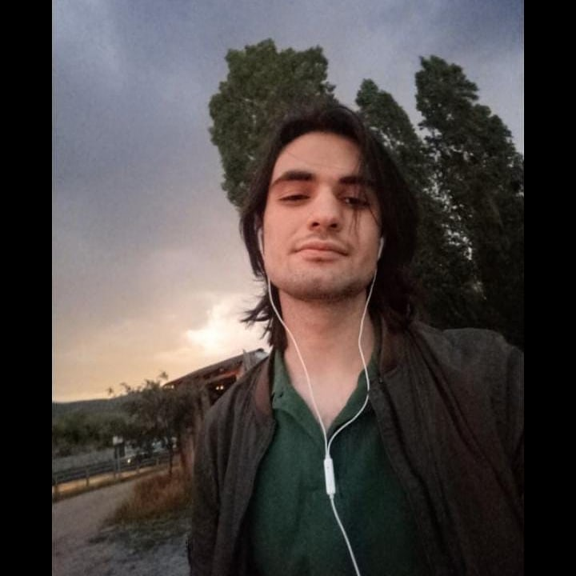
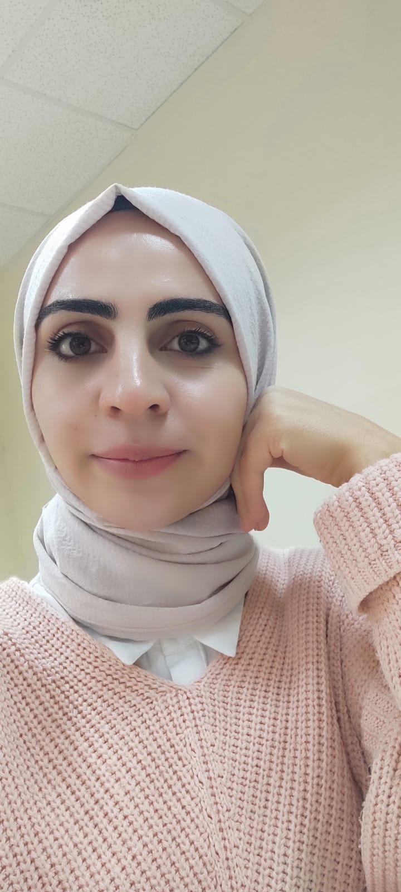

Miraç SancıGithub Hesabı Proje 1 Proje 2 Proje 3 Gamze AktaşGithub Hesabı Proje 1 Proje 2 Proje 3  Erdem DayanGithub Hesabı Proje 1 Proje 2 Proje 3  Özge KaplanGithub Hesabı Proje 1 Proje 2 Şeyma AkbaşGithub Hesabı Proje 1 Ömer GündüzGithub Hesabı Proje 1 Proje 2 Proje 3 Eyüp MüjdeciGithub Hesabı Proje 1 Proje 2 Proje 3 Elif KöftegülGithub Hesabı Proje 1 Proje 2 Proje 3 Hakan TercanlıGithub Hesabı Proje 1 Proje 2 Proje 3 Zeynep ÇevikGithub Hesabı Github">Proje 1 Proje 2 Proje 3 Melik KaracaGithub Hesabı Proje 1 Proje 2 Ceylan SarıkayaGithub Hesabı Proje 1 Umut TopalakGithub Hesabı Proje 1 Proje 2 Proje 3 Nurullah IşıkGithub Hesabı Proje 1 Proje 2 Proje 3 Ekmel KurtGithub Hesabı Proje 1 Proje 2 Proje 3